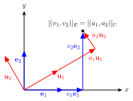

Basis
Contents
Basis#
Imagine that we have a virtual environment and we need to view it from a given point within the environment. To represent the environment as it should be seen from this point will require us to calculate the co-ordinates of objects in the environment in relation to where we are viewing it from (known as the camera space). To do this we make use of vector basis and the change of basis.
Definition 7 (Linear independence)
A set of vectors \(\mathbf{v}_1, \mathbf{v}_2, \ldots, \mathbf{v}_n\) in a vector space \(V\) are linearly independent if the only solution to the equation
is \(\alpha_i = 0\) for \(i = 1 , 2, \ldots, n\). If a set of vectors is not linearly independent then they must be linearly dependent.
Theorem 1 (Determinant test for linear independence)
A set of vectors are linearly independent if \(\det (\mathbf{v}_1, \mathbf{v}_2, \ldots, \mathbf{v}_n) \neq 0\).
A basis of a vector space \(V\) is the set of vectors \(\{ \mathbf{v}_1, \mathbf{v}_2, \ldots, \mathbf{v}_n \}\) which are linearly independent (i.e., no vector in the basis can be represented as a linear combination of the other vectors in the basis) and span \(V\). Every other vector \(\mathbf{u}\) in \(V\) can be expressed as a unique linear combination of the vectors in the basis, i.e.,
where \(\alpha_i \in \mathbb{R}\). The dimension of a vector space \(V\) is the number of vectors in the basis. For example, the basis for the Euclidean space \(\mathbb{R}^3\) is commonly denoted as \(\{ \mathbf{i}, \mathbf{j}, \mathbf{k} \}\) where
so \(\mathbb{R}^3\) is known as a three-dimensional Euclidean space. The basis \(\{ \mathbf{i}, \mathbf{j}, \mathbf{k} \}\) is the simplest basis for \(\mathbb{R^3}\) in that it has the smallest number of non-zero values and those values are 1s. This basis is known as the standard basis.
Definition 8 (The standard basis)
The standard basis for a vector space \(\mathbb{R}^n\) is \(E = \{ \mathbf{e}_1, \mathbf{e}_2, \ldots, \mathbf{e}_n \}\) where \(\mathbf{e}_i\) is column \(i\) of the identity matrix, i.e.,
Note that in \(\mathbb{R}^3\) it is common to use \(\mathbf{i} = \mathbf{e}_1\), \(\mathbf{j} = \mathbf{e}_2\) and \(\mathbf{k} = \mathbf{e}_3\).
Change of basis#
{kind=link}

Fig. 10 The same point represented with respect to two different vectors.#
Sometimes it is useful to write a vector with respect to a different basis which is known as the change of basis. Consider Fig. 10 where the vector \(\mathbf{v} = (v_1,v_2)\) is represented with respect to the standard basis \(E=\{\mathbf{e}_1, \mathbf{e}_2\}\) which is denoted by the subscript notation \([(v_1,v_2)]_E\). The same vector can be represent with respect to a different basis \(U = \{\mathbf{u}_1, \mathbf{u}_2\}\) by the vector \([(a_1, a_2)]_U\). Changing the basis from \(E\) to \(U\) requires us to calculate the values of \(a_1\) and \(a_2\), i.e., in \(\mathbb{R}^3\) we solve
This is a system of linear equations which we can write as a matrix equation
We can solve this system by inverting the coefficient matrix. Using Gauss-Jordan elimination we form the augmented matrix
and row reduce to reduced row echelon form. Note that the matrix to the right hand side of the partition is the identity matrix. Then \([\mathbf{v}]_U\) can be calculated using
The square matrix here is known as the change of basis matrix that changes the basis from \(E\) to \(U\) and is denoted by \(A_{E \to U}\).
Example 5
Represent the vector \([\mathbf{a}]_E = (4, 0, 5)\) with respect to the basis \(U = \{(1, 1, 0), (1, -1, 1), (1, -1, -2)\}\).
Solution
We need to solve the system
which can be written as the matrix equation
where \([\mathbf{a}]_U = (\alpha_1, \alpha_2, \alpha_3)\). Calculating the inverse of the coefficient matrix using Gauss-Jordan elimination
therefore the change of basis matrix is \(A_{E \to U} = \begin{pmatrix} 1/2 & 1/2 & 0 \\ 1/3 & -1/3 & 1/3 \\ 1/6 & -1/6 & -1/3 \end{pmatrix}\)
so
The change of basis calculation shown in Example 5 was relatively straightforward as it involved changing from the standard basis. We can extend this method to change between two arbitrary basis. Let \(U = \{ \mathbf{u}_1, \mathbf{u}_2, \ldots, \mathbf{u}_n\}\) and \(W = \{ \mathbf{w}_1, \mathbf{w}_2, \ldots, \mathbf{w}_n \}\) be two basis for the vector space \(V\) then the basis \(U\) can be represnted with respect to \(W\), i.e.,
where \(a_{ij}\) are scalars. Given a vector \(\mathbf{v} = (v_1, v_2, \ldots, v_n) \in V\) expressed with respect to the basis \(U\) then
and substituting the expressions for \(\mathbf{u}_i\) from equation (7) then
Factorising out the \(\mathbf{w}_i\) vectors we can write this as
So we know that \(\mathbf{v}\) represented with respect to the basis \(W\) is
To calculate the change of basis matrix \(A_{U \to W}\) such that \([\mathbf{v}]_W = A_{U \to W} [\mathbf{v}]_U\) we need to solve the system
We can do this by row reducing the augmented matrix
to reduced row echelon form where \(A_{U\to W}\) is the matrix to the right of the partition. Note that this is what was done in the solution to Example 5 where the matrix to the right-hand side of the partition of the augmented matrix was the identity matrix, i.e., the standard basis.
Example 6
\(U\) and \(W\) are two basis of \(\mathbb{R}^n\) given by
(i) Calculate the change of basis matrix \(A_{U \to W}\)
Solution
To calculate \(A_{U \to W}\) we need to reduce the following augmented matrix to reduced row echelon form
therefore \(A_{U\to W} = \begin{pmatrix} 1 & 2 \\ -1 & -1 \end{pmatrix}\).
(ii) If \(\mathbf{v} \in \mathbb{R}^2\) where \([\mathbf{v}]_U = (1,2)\), calculate \([\mathbf{v}]_W\)